에너지관리기사 (2017-09-23 기출문제)
1과목: 연소공학
1. 단일기체 10Nm3의 연소가스를 분석한 결과 CO2 : 8Nm3, CO: 2Nm3, H2O : 20Nm3을 얻었다면 이 기체연료는?
- CH4
- C2H2
- C2H4
- C2H6
(정답률: 66%)

2. 공기를 사용하여 중유를 무화시키는 형식으로 아래의 조건을 만족하면서 부하변동이 많은데 가장 적합한 버너의 형식은?
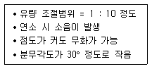
- 로터리식
- 저압기류식
- 고압기류식
- 유압식
(정답률: 59%)
3. 중량비로 탄소 84%, 수소 13%, 유황 2%의 조성으로 되어 있는 경유의 이론공기량은 약 몇 Nm3/kg인가?
- 5
- 7
- 9
- 11
(정답률: 52%)
4. 산포식 스토커를 이용한 강제통풍일 때 일반적인 화격자 부하는 어느 정도인가?
- 90 ~ 110 kg/m2·h
- 150 ~ 200 kg/m2·h
- 210 ~ 250 kg/m2·h
- 260 ~ 300 kg/m2·h
(정답률: 73%)
5. 기체연료의 체적 분석결과 H2가 45%, CO가 40%, CH4가 15%이다. 이 연료 1m3를 연소하는데 필요한 이론공기량은 몇 m3인가?(단, 공기 중의 산소 : 질소의 체적비는 1 : 3.77이다.)
- 3.12
- 2.14
- 3.46
- 4.43
(정답률: 40%)
6. 다음 중 연소온도에 직접적인 영향을 주는 요소로 가장 거리가 먼 것은?
- 공기 중의 산소농도
- 연료의 저위발열량
- 연소실의 크기
- 공기비
(정답률: 77%)
7. 공기나 연료의 예열효과에 대한 설명으로 옳지 않은 것은?
- 연소실 온도를 높게 유지
- 착화열을 감소시켜 연료를 절약
- 연소효율 향상과 연소상태의 안정
- 이론공기량이 감소함
(정답률: 66%)
8. 1차, 2차 연소 중 2차 연소에 대한 설명으로 가장 적절한 것은?
- 불완전 연소에 의해 발생한 미연가스가 연도 내에서 다시 연소하는 것
- 공기보다 먼저 연료를 공급했을 경우 1차, 2차 반응에 의해서 연소하는 것
- 완전 연소에 의한 연소가스가 2차 공기에 의해서 폭발되는 것
- 점화할 때 착화가 늦었을 경우 재 점화에 의해서 연소하는 것
(정답률: 83%)
9. 다음 연소범위에 대한 설명으로 옳은 것은?
- 온도가 높아지면 좁아진다.
- 압력이 상승하면 좁아진다.
- 연소상한계 이상의 농도에서는 산소농도가 너무 높다
- 연소하한계 이하의 농도에서는 가연성 증기의 농도가 너무 낮다.
(정답률: 55%)
10. 다음 중 중유의 성질에 대한 설명으로 옳은 것은?
- 점도에 따라 1, 2, 3급 중유로 구분한다.
- 원소 조성은 H가 가장 많다.
- 비중은 약 0.72 ~ 0.76 정도이다.
- 인화점은 약 60 ~ 150℃ 정도이다.
(정답률: 67%)
11. 폭굉 현상에 대한 설명으로 옳지 않은 것은?
- 확산이나 열전도의 영향을 주로 받는 기체역학적 현상이다.
- 물질 내에 충격파가 발생하여 반응을 일으킨다.
- 충격파에 의해 유지되는 화학 반응 현상이다.
- 반응의 전파속도가 그 물질 내에서 음속보다 빠른 것을 말한다.
(정답률: 62%)
12. 연료시험에 사용되는 장치 중에서 주로 기체연료 시험에 사용되는 것은?
- 세이볼트(saybolt) 점도계
- 톰슨(Thomson) 열량계
- 오르잣(Orsat) 분석장치
- 펜스키 마텐스(Pensky martens) 장치
(정답률: 60%)
13. 다음 중 중유 첨가제의 종류에 포함되지 않는 것은?
- 슬러지 분산제
- 안티녹제
- 조연제
- 부식방지제
(정답률: 65%)
14. 다음 집진장치의 특성에 대한 설명으로 옳지 않은 것은?
- 사이클론 집진기는 분진이 포함된 가스를 선회운동 시켜 원심력에 의해 분진을 분리한다.
- 전기식 집진장치는 대치시킨 2개의 전극사이에 고압의 교류전장을 가해 통과하는 미립자를 집진하는 장치이다.
- 가스흡입구에 벤투리관을 조합하여 먼지를 세정하는 장치를 벤투리 스크러버라 한다.
- 백 필터는 바닥을 위쪽으로 달아메고 하부에서 백내부로 송입하여 집전하는 방식이다.
(정답률: 55%)
15. 탄화수소계 연료(CxHy)를 연소시켜 얻은 연소생성물을 분석한 결과 CO2 9%, CO 1%, O2 8%, N2 82%의 체적비를 얻었다. y/x의 값은 얼마인가?
- 1.52
- 1.72
- 1.92
- 2.12
(정답률: 49%)
16. 다음의 무게조성을 가진 중유의 저위발열량은 약 몇 kcal/kg인가? (단, 아래의 조성은 중유 1kg당 함유된 각 성분의 양이다.)
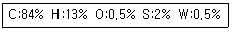
- 8600
- 1⑤90
- 13600
- 17600
(정답률: 53%)
17. 다음 연소반응식 중 옳은 것은?
- C2H6 + 3O2 → 2CO2 + 4H2O
- C3H3 + 5O2 → 2CO2 + 6H2O
- C4H10 + 6O2 → 4CO2 + 5H20
- CH4 + 2O2 → CO2 + 2H2O
(정답률: 78%)
18. (CO2max)가 24.0%, (CO2)가 14.2% (CO)가 3.0%라면 연소가스 중의 산소는 약 몇 % 인가?
- 3.8
- 5.0
- 7.1
- 10.1
(정답률: 48%)
19. 다음 대기오염 방지를 위한 집진장치 중 습식집진장치에 해당하지 않는 것은?
- 백필터
- 충진탑
- 벤츄리 스크러버
- 사이클론 스크러버
(정답률: 73%)
20. 다음 중 착화온도가 가장 높은 연료는?
- 갈탄
- 메탄
- 중유
- 목탄
(정답률: 65%)
2과목: 열역학
21. 다음 중 압력이 일정한 상태에서 온도가 변하였을 때의 체적팽창계수 β에 관한 식으로 옳은 것은? (단, 식에서 V는 부피 T는 온도, P는 압력을 의미한다.)
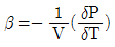
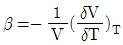
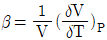
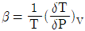
(정답률: 61%)
22. 이상적인 카르노(Carnot) 사이클의 구성에 대한 설명으로 옳은 것은?
- 2개의 등온과정과 2개의 단열과정으로 구성된 가역 사이클이다.
- 2개의 등온과정과 2개의 정압과정으로 구성된 가역 사이클이다.
- 2개의 등온과정과 2개의 단열과정으로 구성된 비가역 사이클이다.
- 2개의 등온과정과 2개의 정압과정으로 구정된 비가역 사이클이다.
(정답률: 64%)
23. 폐쇄계에서 경로 A→C→B를 따라 110J의 열이 계로 들어오고 50J의 일을 외부에 할 경우 B→D→A를 따라라 계가 되돌아 올 때 계가 40J의 일을 받는다면 이 과정에서 계는 얼마의 열을 방출 또는 흡수하는가?
- 30J 방출
- 30J 흡수
- 100J 방출
- 100J 흡수
(정답률: 56%)
24. 다음 중 수증기를 사용하는 증기동력 사이클은?
- 랭킨 사이클
- 오토 사이클
- 디젤 사이클
- 브레이턴 사이클
(정답률: 73%)
25. 그림은 단열, 등압, 등온, 등적을 나타내는 압력(P)-부피(V), 온도(T)-엔트로피(S) 선도이다. 각 과정에 대한 설명으로 옳은 것은?
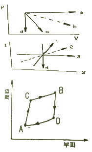
- a는 등적과정이고 4는 가역단열과정이다.
- b는 등온과정이고 3은 가역단열과정이다.
- c는 등적과정이고 2는 등압과정이다.
- d는 등적과정이고 4는 가역단열과정이다.
(정답률: 61%)
26. 1MPa의 포화증기가 등온상태에서 압력이 700kPa까지 내려갈 때 최종상태는?
- 과열증기
- 습증기
- 포화증기
- 포화액
(정답률: 57%)
27. 이상기체 2kg을 정압과정으로 50℃에서 150℃로 가열할 때, 필요한 열량은 약 몇 kJ인가? (단, 이 기체의 정적비열은 3.1kJ/(kg·K)이고, 기체상수는 2.1kJ/(kg·K))
- 210
- 310
- 620
- 1040
(정답률: 43%)
28. 비가역 사이클에 대한 클라시우스(Clausius)의 적분에 대하여 옳은 것은? (단, Q는 열량, T는 온도이다.)
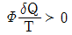
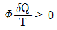
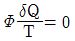
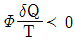
(정답률: 63%)
29. 다음 중 열역학 제1법칙을 설명한 것으로 가장 옳은 것은?
- 제3의 물체와 열평형에 있는 두 물체는 그들 상호간에도 열평형에 있으며, 물체의 온도는 서로 같다.
- 열을 일로 변환할 때 또는 일을 열로 변환할 때 전체 계의 에너지 총량은 변하지 않고 일정하다.
- 흡수한 열을 전부 일로 바꿀 수는 없다.
- 절대 영도 즉 0K에는 도달할 수 없다.
(정답률: 77%)
30. 일반적으로 사용되는 냉매로 가장 거리가 먼 것은?
- 암모니아
- 프레온
- 이산화탄소
- 오산화인
(정답률: 73%)
31. 다음 중 과열증기(superheated steam)의 상태가 아닌 것은?
- 주어진 압력에서 포화증기 온도보다 높은 온도
- 주어진 비체적에서 포화증기 압력보다 높은 압력
- 주어진 온도에서 포화증기 비체적보다 낮은 비체적
- 주어진 온도에서 포화증기 엔탈피보다 높은 엔탈피
(정답률: 68%)
32. 저위발열량 40000kJ/kg인 연료를 쓰고 있는 열기관에서 이 열이 전부 일로 바꾸어지고, 연료 소비량이 20kg/h이라면 발생되는 동력은약 몇 kW인가?
- 110
- 222
- 346
- 820
(정답률: 64%)
33. N2와 O2의 기체상수는 각각 0.297 kJ/(kg·K) 및 0.260 kJ/(kg·K)이다 N2가 0.7kg, O2가 0.3kg인 혼합 가스의 기체상수는약 몇 kJ/(kg·K)인가?
- 0.213
- 0.254
- 0.286
- 0.312
(정답률: 58%)
34. 밀폐계의 등온과정에서 이상기체가 행한 단위 질량당 일은?(단, 압력과 부피는 P1, V1에서 P2, V2로 변하며 T는 온도, R은 기체상수이다.)
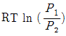
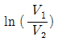
- (P2-P1)(V2-V1)
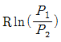
(정답률: 57%)
35. 성능계수가 5.0, 압축기에서 냉매의 단위 질량당 압축하는데 요구되는 에너지는 200kJ/kg인 냉동기에서 냉동능력 1kW당 냉매의 순환량(kg/h)은?
- 1.8
- 3.6
- 5.0
- 20.0
(정답률: 54%)
36. 디젤 사이클에서 압축비가 20, 단절비(cut-offratio)가 1.7일 때 열효율은 약 몇 %인가? (단, 비열비는 1.4 이다.)
- 43
- 66
- 72
- 84
(정답률: 55%)
37. 다음 중 랭킨사이클의 열효율을 높이는 방법으로 옳지 않은 것은?
- 복수기의 압력을 상승시킨다.
- 사이클의 최고 온도를 높인다.
- 보일러의 압력을 상승시킨다.
- 재열기를 사용하여 재열 사이클로 운전한다.
(정답률: 68%)
38. 온도와 관련된 설명으로 옳지 않은 것은?
- 온도 측정의 타당성에 대한 근거는 열역학 제 0법칙이다.
- 온도가 0℃에서 10℃로 변화하면 온도는0K에서 283.15K로 변화한다.
- 섭씨온도는 물의 어는점과 끓는점을 기준으로 삼는다.
- SI단위계에서 온도의 단위는 켈빈 단위를 사용한다.
(정답률: 76%)
39. 압력이 100kPa인 공기를 정적과정으로 200kPa의 압력이 되었다. 그 후 정압과정으로 비체적이 1m3/kg에서 2m3/kg으로 변하였다고 할 때 이 과정 동안의 총 엔트로피의 변화량은 약 몇 kJ/(kg·K)인가? (단, 공기의 정적비열은 0.7kJ/(kg·K), 정압비열은 1.0 kJ/(kg·K))
- 0.31
- 0.52
- 1.04
- 1.18
(정답률: 35%)
40. 역 카르노 사이클로 작동하는 냉동사이클이 있다. 저온부가 -10℃로 유지되고, 고온부가 40℃로 유지되는 상태를 A상태라고 하고, 저온부가 0℃, 고온부가 50℃로 유지되는 상태를 B상태라 할 때, 성능계수는 어느 상태의 냉동사이클이 얼마나 더 높은가?
- A상태의 사이클이 약 0.8만큼 높다.
- A상태의 사이클이 약 0.2만큼 높다.
- B상태의 사이클이 약 0.8만큼 높다
- B상태의 사이클이 약 0.2만큼 높다.
(정답률: 58%)
3과목: 계측방법
41. 다음 중 가스분석 측정법이 아닌 것은?
- 오르사트법
- 적외선 흡수법
- 플로우 노즐법
- 가스크로마토그래피법
(정답률: 64%)
42. 마노미터의 종류 중 압력 계산 시 유체의 밀도에는 무관하고 단지 마노미터 액의 밀도에만 관계되는 마노미터는?
- open-end 마노미터
- sealed-end 마노미터
- 차압(differential) 마노미터
- open-end 마노미터와 sealed-end 마노미터
(정답률: 68%)
43. 다음 중 바이메탈온도계의 측온 범위는?
- -200℃ ~ 200℃
- -30℃ ~ 360℃
- -50℃ ~ 500℃
- -100℃ ~ 700℃
(정답률: 64%)
44. 수지관 속에 비중이 0.9인 기름이 흐르고 있다. 아래 그림과 같이 액주계를 설치하였을때 압력계의 지시값은 몇 kg/cm2인가?
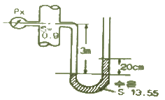
- 0.001
- 0.01
- 0.1
- 1.0
(정답률: 39%)
45. 연소 가스 중의 CO와 H2의 측정에 주로 사용되는 가스 분석계는?
- 과잉공기계
- 질소가스계
- 미연소가스계
- 탄산가스계
(정답률: 68%)
46. 열전온도계에 대한 설명으로 틀린 것은?
- 접촉식 온도계에서 비교적 낮은 온도 측정에 사용한다.
- 열기전력이 크고 온도증가에 따라 연속적으로 상승해야한다.
- 기준접점의 온도를 일정하게 유지해야 한다.
- 측온 저항체와 열전대는 소자를 보고관 속에 넣어 사용한다.
(정답률: 57%)
47. 다음 중 열전대 온도계에서 사용되지 않는 것은?
- 동-콘스탄탄
- 크로멜-알루멜
- 철-콘스탄탄
- 알루미늄-철
(정답률: 73%)
48. 미리 정해진 순서에 따라 순차적으로 진행하는 제어방식은?
- 시퀀스 제어
- 피드백 제어
- 피드포워드 제어
- 적분 제어
(정답률: 80%)
49. 측정량과 크기가 거의 같은 미리 알고 있는 양의 분동을 준비하여 분동과 측정량의 차이로부터 측정량을 구하는 방식은?
- 편위법
- 보상법
- 치환법
- 영위법
(정답률: 57%)
50. 자동제어에서 동작신호의 미분값을 계산하여 이것과 동작신호를 합한 조작량 변화를 나타내는 동작은?
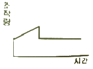
- D동작
- P동작
- PD동작
- PID동작
(정답률: 60%)
51. 베크만 온도계에 대한 설명으로 옳은 것은?
- 빠른 응답성의 온도를 얻을 수 있다.
- 저온용으로 적합하여 약 -100℃까지 측정할 수 있다.
- -60℃ ~ 350℃ 정도의 측정온도 범위인 것이 보통이다.
- 모세관의 상부에 수은을 봉입한 부분에 대해 측정온도에 따라 남은 수은의 양을 가감하여 그 온도부분의 온도차를 0.01℃까지 측정할 수 있다.
(정답률: 51%)
52. 차압식 유량계에 대한 설명으로 옳지 않은 것은?
- 관로에 오리피스, 플로우 노즐 등이 설치되어 있다.
- 정도가 좋으나, 측정범위가 좁다.
- 유량은 압력차의 평방근에 비례한다.
- 레이놀즈수가 105이상에서 유량계수가 유지된다.
(정답률: 62%)
53. 다음중 스로틀(throttle)기구에 의하여 유량을 측정하지 않는 유량계는?
- 오리피스미터
- 플로우 노즐
- 벤투리미터
- 오벌미터
(정답률: 69%)
54. 관로의 유속을 피토관으로 측정할 때 수주의 높이가 30cm이었다. 이 때 유속은약 몇 m/s인가?
- 1.88
- 2.42
- 3.88
- 5.88
(정답률: 57%)
55. 유량계의 교정방법 중 기체 유량계의교정에 가장 적합한 방법은?
- 밸런스를 사용하여 교정한다.
- 기준 탱크를 사용하여 교정한다.
- 기준 유량계를 사용하여 교정한다.
- 기준 체적관을 사용하여 교정한다.
(정답률: 67%)
56. 2.2k 의 저항에 220V의 전압이 사용되었다면 1초당 발생하는 열량은 몇 W인가?
- 12
- 22
- 32
- 42
(정답률: 62%)
57. 가스분석 방법 중 CO2의 농도를 측정할 수 없는 방법은?
- 자기법
- 도전율법
- 적외선법
- 열도전율법
(정답률: 51%)
58. 제어시스템에서 조작량이 제어 편차에 의해서 정해진 두 개의 값이 어느 편인가를 택하는 제어방식으로 제어결과가 다음과 같은 동작은?
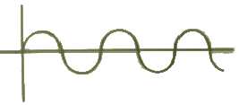
- 온오프동작
- 비례동작
- 적분동작
- 미분동작
(정답률: 71%)
59. 벨로우즈(Bellows)압력계에서 Bellows 탄성의 보조로 코일 스프링을 조합하여 사용하는 주된 이유는?
- 감도를 증대시키기 위하여
- 측정압력 범위를 넓히기 위하여
- 측정지연 시간을 없애기 위하여
- 히스테리시스 현상을 없애기 위하여
(정답률: 70%)
60. 액체와 고체연료의 열량을 측정하는 열량계는?
- 봄브식
- 융커스식
- 클리브랜드식
- 태그식
(정답률: 71%)
4과목: 열설비재료 및 관계법규
61. 내화물의 스폴링(spalling) 시험방법에 대한 설명으로 틀린 것은?
- 시험체는 표준형 벽돌을 110±5℃에서 건조하여 사용한다.
- 전 기공율 45% 이상의 내화벽돌은 공랭법에 의한다.
- 시험편을 노 내에 삽입 후 소정의 시험온도에 도달하고 나서 약 15분간 가열한다.
- 수냉법의 경우 노 내에서 시험편을 꺼내어 재빠르게 가열면 측을 눈금의 위치까지 물에 잠기게 하여 약 10분간 냉각한다.
(정답률: 58%)
62. 에너지 이용 합리화법에 따라 고효율에너지 인증대상기자재에 해당되지 않는 것은?
- 펌프
- 무정전 전원장치
- 가정용 가스보일러
- 발광다이오드 등 조명기기
(정답률: 68%)
63. 내화물의 제조공정의 순서로 옳은 것은?
- 혼련 → 성형 → 분쇄 → 소성 → 건조
- 분쇄 → 성형 → 혼련 → 건조 → 소성
- 혼련 → 분쇄 → 성형 → 소성 → 건조
- 분쇄 → 혼련 → 성형 → 건조 → 소성
(정답률: 58%)
64. 에너지이용 합리화법에 따라 열사용기자재 중 2종 압력용기의 적용범위로 옳은 것은?
- 최고사용압력이 0.1MPa를 초과하는 기체를 그 안에 보유하는 요기로서 내부 부피가 ⑤m3 이상인 것
- 최고사용압력이 0.2MPa를 초과하는 기체를 그 안에 보유하는 요기로서 내부 부피가 0.04m3 이상인 것
- 최고사용압력이 0.1MPa를 초과하는 기체를 그 안에 보유하는 요기로서 내부 부피가 0.03m3 이상인 것
- 최고사용압력이 0.2MPa를 초과하는 기체를 그 안에 보유하는 요기로서 내부 부피가 0.02m3 이상인 것
(정답률: 63%)
65. 에너지이용 합리화법에 따라 에너지이용 합리화에 관한 기본계획 사항에 포함되지 않는 것은?
- 에너지 절약형 경제구조로의 전환
- 에너지이용 합리화를 위한 기술개발
- 열사용기자재의 안전관리
- 국가에너지정책목표를 달성하기 위하여 대통령령으로 정하는 사항
(정답률: 58%)
66. 다음 중 전로법에 의한 제강 작업시의 열원은?
- 가스의 연소열
- 코크스의 연소열
- 석회석의 반응열
- 용선내의 불순원소의 산화열
(정답률: 60%)
67. 요로에 대한 설명으로 틀린 것은?
- 재료를 가열하여 물리적 및 화학적 성질을 변화시키는 가열장치이다.
- 석탄, 석유, 가스, 전기 등의 에너지를 다량으로 사용하는 설비이다.
- 사용목적은 연료를 가열하여 수증기를 만들기 위함이다.
- 조업방식에 따라 불연속식, 반연속식, 연속식으로 분류된다.
(정답률: 69%)
68. 에너지이용 합리화법에서 정한 에너지다소비사업자의 에너지관리기준이란?
- 에너지를 효율적으로 관리하기 위하여 필요한 기준
- 에너지관리 현황 조사에 대한 필요한 기준
- 에너지 사용량 및 제품 생산량에 맞게 에너지를 소비하도록 만든 기준
- 에너지관리 진단 결과 손실요인을 줄이기 위하여 필요한 기준
(정답률: 59%)
69. 에너지이용 합리화법에 따라 산업통상자원부 장관이 국내외 에너지 사정의 변동으로 에너지 수급에 중대한 차질이 발생될 경우 수급안정을 위해 취할 수 있는 조치 사항이 아닌 것은?
- 에너지의 배급
- 에너지의 비축과 저장
- 에너지의 양도·양수의 제한 또는 금지
- 에너지 수급의 안정을 위하여 산업통상자원부령으로 정하는 사항
(정답률: 47%)
70. 규산칼슘 보온재에 대한 설명으로 가장 거리가 먼 것은?
- 규산에 석회 및 석면 섬유를 섞어서 성형하고 다시 수증기로 처리하여 만든 것이다.
- 플랜트 설비의 탑조류, 가열로, 배관류 등의 보온공사에 많이 사용된다.
- 가볍고 단열성과 내열성은 뛰어나지만 내산성이 적고 끓는 물에 쉽게 붕괴된다.
- 무기질 보온재로 다공질이며 최고 안전 사용온도는 약 650℃ 정도이다.
(정답률: 56%)
71. 에너지이용 합리화법에서 에너지의 절약을 위해 정한 “자발적 협약”의 평가 기준이 아닌 것은?
- 계획대비 달성률 및 투자실적
- 자원 및 에너지의 재활용 노력
- 에너지 절약을 위한 연구개발 및 보급촉진
- 에너지 절감량 또는 에너지의 합리적인 이용을 통한 온실가스배출 감축량
(정답률: 53%)
72. 보온을 두껍게 하면 방산열량(Q)은 적게 되지만 보온재의 비용(P)은 증대된다. 이 때 경제성을 고려한 최소치의 보온재 두께를 구하는 식은?
- Q + P
- Q2 + P
- Q + P2
- Q2 + P2
(정답률: 64%)
73. 고알루미나(high alumina)질 내화물의 특성에 대한 설명으로 옳은 것은?
- 급열, 급냉에 대한 저항성이 적다.
- 고온에서 부피변화가 크다.
- 하중 연화온도가 높다.
- 내마모성이 적다.
(정답률: 55%)
74. 에너지이용 합리화법에 따라 검사대상기기의 설치자가 변경된 경우 새로운 검사대상기기의 설치자는 그 변경일로부터 최대 며칠 이내에 검사대상기기 설치자 변경신고서를 제출하여야 하는가?
- 7일
- 10일
- 15일
- 20일
(정답률: 63%)
75. 배관 내 유체의 흐름을 나타내는 무차원 수인 레이놀즈 수(Re)의 층류 흐름 기준은?
- Re ＜ 1000
- Re ＜ 2100
- 2100 ＜ Re
- 2100 ＜ Re ＜ 4000
(정답률: 71%)
76. 다음 중 배관의 호칭법으로 사용되는 스케줄 번호를 산출하는데 직접적인 영향을 미치는 것은?
- 관의 외경
- 관의 사용온도
- 관의 허용응력
- 관의 열팽창계수
(정답률: 51%)
77. 보온 단열재의 재료에 따른 구분에서 약 850 ~ 1200℃ 정도까지 견디며, 열 손실을 줄이기 위해 사용되는 것은?
- 단열재
- 보온재
- 보냉재
- 내화 단열재
(정답률: 60%)
78. 터널가마(tunnel kiln)의 장점이 아닌 것은?
- 소성이 균일하여 제품의 품질이 좋다.
- 온도조절의 자동화가 쉽다.
- 열효율이 좋아 연료비가 절감된다.
- 사용연료의 제한을 받지 않고 전력소비가 적다.
(정답률: 73%)
79. 견요의 특징에 대한 설명으로 틀린 것은?
- 석회석 클링커 제조에 널리 사용된다.
- 하부에서 연료를 장입하는 형식이다.
- 제품의 예열을 이용하여 연소용 공기를 예열한다.
- 이동 화상식이며 연속요에 속한다.
(정답률: 61%)
80. 에너지이용 합리화법에 따라 에너지다소비사업자는 연료·열 및 전력의 연간 사용량의 합계가 얼마 이상인자를 나타내는가?
- 1천 티오이 이상인 자
- 2천 티오이 이상인 자
- 3천 티오이 이상인 자
- 5천 티오이 이상인 자
(정답률: 76%)
5과목: 열설비설계
81. 수관보일러에서 수냉 노벽의 설치 목적으로 가장 거리가 먼 것은?
- 고온의 연소열에 의해 내화물이 연화, 변형되는 것을 방지하기 위하여
- 물의 순환을 좋게 하고 수관의 변형을 방지하기 위하여
- 복사열을 흡수시켜 복사에 의한 열손실을 줄이기 위하여
- 전열면적을 증가시켜 전열효율을 상승시키고 보일러 효율을 높이기 위하여
(정답률: 53%)
82. 보일러에 부착되어 있는 압력계의 최고눈금은 보일러의 최고사용압력의 최대 몇 배 이하의 것을 사용해야 하는가?
- 1.5배
- 2.0배
- 3.0배
- 3.5배
(정답률: 51%)
83. 코르니시 보일러의 노통을 한쪽으로 편심부착시키는 주된 목적은?
- 강도상 유리하므로
- 전열면적을 크게 하기 위하여
- 내부청소를 간편하게 하기 위하여
- 보일러 물의 순환을 좋게 하기 위하여
(정답률: 70%)
84. 다음 무차원 수에 대한 설명으로 틀린 것은?
- Nusselt수는 열전달계수와 관계가 있다.
- Prandtl수는 동점성계수와 간계가 있다.
- Reynolds수는 층류 및 난류와 관계가 있다.
- Stanton수는 확산계수와 관계가 있다.
(정답률: 58%)
85. 노통보일러에서 갤로웨이관(Galloway tube)을 설치하는 이유가 아닌 것은?
- 전열면적의 증가
- 물의 순환 증가
- 노통의 보강
- 유동저항 감소
(정답률: 49%)
86. 피복 아크 용접에서 루트 간격이 크게 되었을 때 보수하는 방법으로 틀린 것은?
- 맞대기 이음에서 간격이 6mm 이하일 때에는 이음부의 한 쪽 또는 양 쪽에 덧붙이를 하고 깍아내어 간격을 맞춘다.
- 맞대기 이음에서 간격이 16mm 이상일때에는 판의 전부 혹은 일부를 바꾼다.
- 필릿 용접에서 간격이 1.5 ~ 4.5mm 일때에는 그대로 용접해도 좋지만 벌어진 간격만큼 각장을 작게 한다.
- 필릿 용접에서 간격이 1.5mm 이하일 때에는 그대로 용접한다.
(정답률: 67%)
87. 유량 7m3/s의 주철제 도수관의 지름(mm)은? (단, 평균유속(V)은 3m/s 이다.)
- 680
- 1312
- 1723
- 2163
(정답률: 56%)
88. 보일러 응축수 탱크의 가장 적절한 설치위치는?
- 보일러 상단부와 응축수 탱크의 하단부를 일치시킨다.
- 보일러 하단부와 응축수 탱크의 하단부를 일치시킨다.
- 응축수 탱크는 응축수 회수배관보다 낮게 설치한다.
- 응축수 탱크는 송출 증기관과 동일한 양정을 갖는 위치에 설치한다.
(정답률: 63%)
89. 보일러수의 분출시기가 아닌 것은?
- 보일러 가동 전 관수가 정지되었을 때
- 연속운전일 경우 부하가 가벼울 때
- 수위가 지나치게 낮아졌을 때
- 프라이밍 및 포밍이 발생할 때
(정답률: 65%)
90. 이온 교환체에 의한 경수의 연화 원리에 대한 설명으로 옳은 것은?
- 수지의 성분과 Na형의 양이온과 결합하여 경도성분 제거
- 산소 원자와 수지가 결합하여 경도 성분 제거
- 물속의 음이온과 양이온이 동시에 수지와 결합하여 경도성분 제거
- 수지가 물속의 모든 이물질과의 결합하여 경도성분 제거
(정답률: 59%)
91. 증발량 2 ton/h, 최고사용압력이 10kg/cm2, 급수온도 20℃, 최대 증발율 25kg/m2·h인 원통 보일러에서 평균 증발률을 최대 증발률의 90%로 할 때, 평균 증발량(kg/h)은?
- 1200
- 1500
- 1800
- 2100
(정답률: 50%)
92. 동체의 안지름이 2000 mm, 최고사용압력이 12kg/cm2인 원통보일러 동판의 두께(mm)는? (단, 강판의 인장강도 40kg/mm2, 안전율 4.5, 용접부의 이음효율(η) 0.71, 부식여유는 2mm이다.)
- 12
- 16
- 19
- 21
(정답률: 33%)
93. 아래 벽체구조의 열관류율(kcal/h·m2·℃)은? (단, 내측 열전도저항 값은 0.⑤m2·h·℃/kcal이며, 외측 열전도저항 값은 0.13m2·h·℃/kcal)
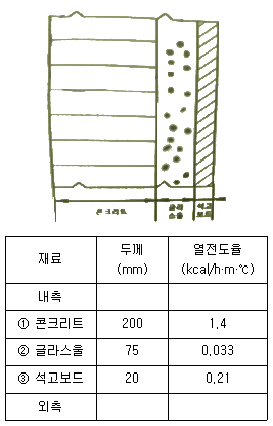
- 0.37
- 0.57
- 0.87
- 0.97
(정답률: 40%)
94. 보일러의 과열에 의한 압궤(Collapse)의 발생부분이 아닌 것은?
- 노통 상부
- 화실천장
- 연관
- 가셋스테이
(정답률: 75%)
95. 보일러 설치공간의 계획 시 바닥으로부터 보일러 동체의 최상부까지의 높이가 4.4m라면, 바닥으로부터 상부 건축구조물까지의 최소높이는 얼마이상을 유지하여야 하는가?
- 5.0m 이상
- 5.3m 이상
- 5.6m 이상
- 5.9m이상
(정답률: 62%)
96. 결정조직을 조정하고 연화시키기 위한 열처리 조작으로 용접에서 발생한 잔류응력을 제거하기 위한 것은?
- 뜨임(tempering)
- 풀림(annealing)
- 담금질(quenching)
- 불림(normalizing)
(정답률: 79%)
97. 최고사용압력 1.5MPa, 파형 형상에 따른 정수(C)를 1100으로 할 때 노통의 평균지름이 1100 mm인 파형노통의 최소 두께는?
- 10mm
- 15mm
- 20mm
- 25mm
(정답률: 57%)
98. 상향 버킷식 증기트랩에 대한 설명으로 틀린 것은?
- 응축수의 유입구와 유출구의 차압이 없어도 배출이 가능하다.
- 가동 시 공기 빼기를 하여야 하며 겨울철 동결 우려가 있다.
- 배관계통에 설치하여 배출용으로 사용된다.
- 장치의 설치는 수평으로 한다.
(정답률: 51%)
99. NaOH 8g을 200L의 수용액에 녹이면 pH는?
- 9
- 10
- 11
- 12
(정답률: 49%)
100. 프라이밍 및 포밍이 발생한 경우 조치 방법으로 틀린 것은?
- 압력을 규정압력으로 유지한다.
- 보일러수의 일부를 분출하고 새로운 물을 넣는다.
- 증기밸브를 열고 수면계의 수위 안정을 기다린다.
- 안전밸브, 수면계의 시험과 압력계 연락관을 취출하여 본다.
(정답률: 48%)